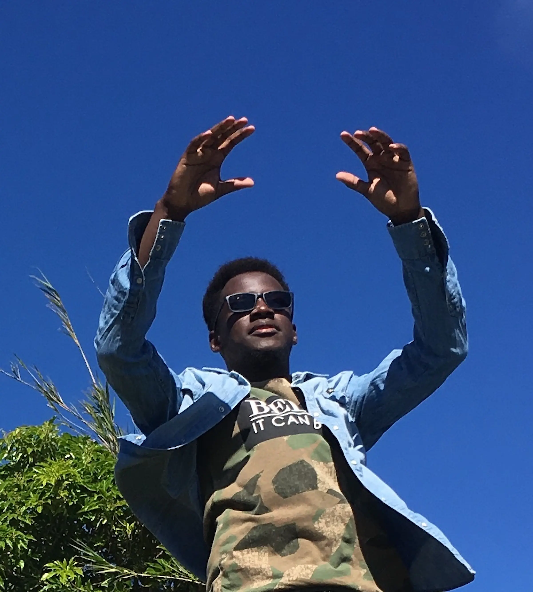
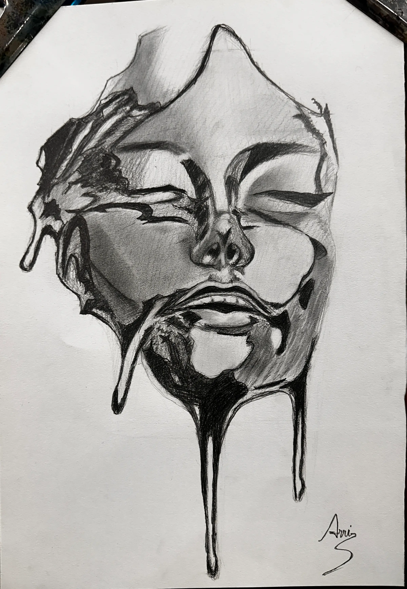

Haitian Background
I am originally from Haiti. My background has shaped my resilience, adaptability, and motivation to pursue education and technology with purpose.
About Me
A blend of cultures, education, and curiosity shapes the way I learn, build, and solve technical problems. I thrive at the intersection of technology, people, and purpose.
I am originally from Haiti. My background has shaped my resilience, adaptability, and motivation to pursue education and technology with purpose.
I am currently based in Taoyuan City, Taiwan, where I continue my academic journey and professional development in an international environment.
I am a senior in the International Bachelor Program in Informatics at Yuan Ze University, building a foundation in computer science, software, and intelligent systems.
My academic interests include artificial intelligence, deep learning, data mining, smart manufacturing, image processing, networks, and databases.
I speak English, French, Haitian Creole, Mandarin, and Spanish, which helps me communicate across cultures and work in international settings.
I am interested in turning academic questions into practical technical solutions, especially in explainable AI and intelligent manufacturing.
Outside of research and code, I'm trying to build the best version of myself across every dimension at once — intellectually, physically, and spiritually. These practices keep me grounded, creative, and driven.
I train regularly: the gym, running, and boxing. I want to be as proud of my body as I am of my mind, and showing up for that day after day is the same discipline I bring to everything else.

I have a deep need to understand the world, myself, and my connection to something larger than my single self. Meditation keeps me grounded and far less reactive, and I explore widely across philosophy and spiritual traditions — Christianity, Buddhism, Taoism.

I've drawn since I was a kid, mostly sketches and portraits. I drifted away from it and came back to realize how much I still love it — when I'm drawing, two hours can pass and feel like ten minutes.